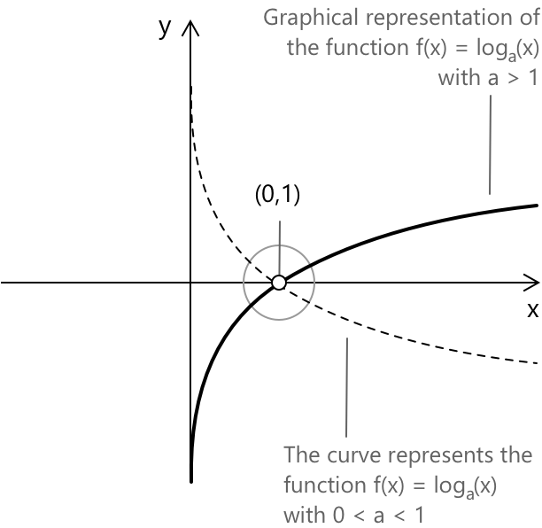

Логарифми
Означення
Якщо \(a\) та \(b\) — додатні дійсні числа, де \(a \neq 1\), то логарифмом \(b\) за основою \(a\), що позначається як \(\log_a(b)\), називають таке дійсне число \(c\), що \(a^c = b\).
\[\log_a{b} = c \iff a^c = b \]
Мають бути виконані наступні умови:
\[a>0 \quad a \neq 1 \quad b > 0 \]
Простіше кажучи, логарифм числа — це показник степеня, до якого треба піднести задану основу, щоб отримати це число. Таким чином, логарифм є оберненою операцією до піднесення до степеня.
- \(a\) — основа логарифма.
- \(b\) — аргумент.
Щоб роз'яснити це поняття, розглянемо простий приклад: \(\log{_2}8 = 3 \to 2^3 =8\).
Умова \( a \neq 1 \) є важливою. Фактично, коли \( a = 1 \), показниковий вираз \( a^x \) стає \( 1^x = 1 \quad \forall \, x \in \mathbb{R} \). У цьому випадку показникова функція є сталою і, отже, не є оберненією. Оскільки логарифм визначено як обернену операцію до піднесення до степеня, він не може бути визначений, коли основа дорівнює \(1\). З цієї причини основа логарифма має задовольняти умови \( a > 0 \) та \( a \neq 1 \).
Основні тотожності
Розуміння логарифмів потребує повторення поняття степенів, оскільки ці дві математичні ідеї тісно пов'язані. Наступні тотожності випливають безпосередньо з принципу того, що логарифми є оберненою операцією до піднесення до степеня:
\[a^0 = 1 \to \log{_a}1 = 0 \] \[a^1 = a \to \log{_a}a = 1 \]
Оскільки показникова функція завжди додатна, неможливо визначити логарифм від'ємного числа. Формально, \(\nexists\) такого числа \(c \in \mathbb{R}\), що \(a^c < 0\).
-
Логарифми за основою \(e\), відомі як натуральні або Неперієві логарифми, зазвичай позначаються як \( \ln a \) без зазначення основи, де \(e \approx 2.71828\) — це число Ейлера, основа натуральної показникової функції \(e^x\).
-
Логарифми за основою \(10\), відомі як десяткові логарифми, зазвичай позначаються як \( \text{Log} a \) без зазначення основи.
Десятковий логарифм особливо корисний при роботі з дуже великими або дуже малими числами. Він допомагає зменшити масштаб, що полегшує інтерпретацію та порівняння значень. Саме тому він широко використовується в наукових і технічних галузях, часто відображаючись на логарифмічних шкалах.
Логарифмічна функція
Як було зазначено раніше, логарифмічна функція є оберненою до показникової функції. Відповідно, її область визначення та область значень є інвертованими порівняно з показниковою функцією. Логарифмічна функція зазвичай виражається у наступному вигляді:
\[ \log_a : (0,+\infty) \to \mathbb{R}, \quad a > 0,\; a \neq 1 \]
Область визначення \(x \in \mathbb{R}^+ \), а область значень — \(\mathbb{R}\). Функція є неперервною та диференційною на \( (0,+\infty) \).

Графік вище ілюструє монотонну поведінку та асимптотичні властивості логарифмічної функції. Для значень \( a > 1 \) функція \(f(x) = \log_a x\) є строго зростаючою на \( (0,+\infty) \). Вона має вертикальну асимптоту при \( x = 0 \), а її границі такі:
\[ \begin{aligned} \lim_{x \to 0^+} \log_a x &= -\infty \\[8pt] \lim_{x \to +\infty} \log_a x &= +\infty \end{aligned} \]
Для \( 0 < a < 1 \) функція є строго спадаючою на \( (0,+\infty) \). Пряма \( x = 0 \) знову є вертикальною асимптотою, але гранична поведінка змінюється на протилежну:
\[ \begin{aligned} \lim_{x \to 0^+} \log_a x &= +\infty \\[8pt] \lim_{x \to +\infty} \log_a x &= -\infty \end{aligned} \]
Логарифмічна функція використовується в різних дисциплінах, наприклад, в інформатиці, де вона є фундаментальною для аналізу алгоритмічної складності. Наприклад, такі алгоритми, як бінарний пошук, мають логарифмічну часову складність, що вказує на те, що їхня продуктивність залишається ефективною зі збільшенням розміру вхідних даних. Ця характеристика демонструє, як логарифмічний ріст дозволяє створювати стислі та ефективні представлення експоненціальних процесів.
Дослідник логарифмічної функції
Цей інтерактивний графік ілюструє, як форма логарифмічної функції залежить від значення її основи. Вибираючи основи, більші за 1 або від 0 до 1, можна спостерігати, як функція змінюється зі зростаючої на спадну, а також її поведінку біля нуля та на нескінченності, що забезпечує чітку візуальну інтерпретацію її фундаментальних властивостей та базової структури.
Властивості логарифмів
Логарифми мають властивості, які полегшують маніпуляції з математичними виразами та рівняннями. Ці властивості фундаментально пов'язані з властивостями покажчикових функцій, оскільки кожна логарифмічна тотожність безпосередньо випливає з відповідного закону показників.
Оскільки логарифм визначено як обернену до покажчикової функції, наступні тотожності є правильними:
\[ a^{\log_a x} = x \qquad \forall x \in (0,+\infty) \]
\[ \log_a(a^x) = x \qquad \forall x \in \mathbb{R} \]
Правило добутку стверджує, що логарифм добутку двох чисел дорівнює сумі їхніх логарифмів з тією самою основою: \[\log_a(xy) = \log_ax + \log_ay \]
Правило частки стверджує, що логарифм частки двох чисел дорівнює різниці логарифмів чисельника та знаменника: \[ \log_a{\frac{x}{y}} = \log_ax-\log_ay \] З попереднього виразу, якщо чисельник \(x\) дорівнює \(1\), ми отримаємо: \[ \log_a{\frac{1}{y}} = -\log_ay \] Це означає, що логарифм оберненого до числа \(\frac{1}{y}\) є протилежним до його логарифма, і це називається кологарифмом, що позначається як: \[\text{colog}_a{y} = -log_a{y} = \log_a{\frac{1}{y}}\]
Властивість логарифма степеня стверджує, що логарифм степеня числа дорівнює добутку показника степеня та логарифма основи: \[ \log{_a}x^n = n \cdot \log{_a}x \] Ця властивість безпосередньо випливає з властивостей покажчикових функцій, оскільки вираз на кшталт \( x^n \) можна розуміти як результат множення \( x \) самого на себе \( n \) разів.
З попередньої властивості та властивості ірраціональних виразів (коренів) випливає, що логарифм кореня дорівнює частці між логарифмом підкореневого виразу та показником кореня: \[\log_a\sqrt[n]{b} = \frac{1}{n}\log_ab \]
Фундаментальна нерівність для натурального логарифма
Ключова нерівність, що містить натуральний логарифм \(\ln\), задана так:
\[ \ln x \le x - 1 \qquad \forall x > 0 \]
Ця рівність виконується тоді і тільки тоді, коли \( x = 1 \). Цей результат безпосередньо випливає з опуклості функції \( \ln x \) на проміжку \( (0,+\infty) \). Оскільки друга похідна задовольняє умову:
\[ (\ln x)^{\prime\prime} = -\frac{1}{x^2} < 0 \qquad \forall x > 0 \]
Графік логарифма завжди лежить нижче кожної своєї дотичної. Зокрема, розглянемо дотичну в точці \( x = 1 \), де:
\[ \ln 1 = 0 \quad \text{та} \quad (\ln x)’ \big|_{x=1} = 1 \]
Рівняння дотичної має вигляд:
\[ y = x - 1 \]
Отже, нерівність виражає геометричний факт того, що крива \( y = \ln x \) не піднімається вище своєї дотичної в точці \( x = 1 \).
Роль логарифмів в алгебраїчній структурі
Логарифм діє як структурний міст між двома різними алгебраїчними системами. У множині додатних дійсних чисел \((0,+\infty)\) основною операцією є множення, тоді як у \(\mathbb{R}\) цю роль відіграє додавання. Логарифм пов'язує ці системи, перетворюючи мультиплікативні зв'язки на адитивні. Наприклад, розглянемо наступний добуток:
\[ x^3 y^2 \]
Обчислення логарифмів дає:
\[ \log_a(x^3 y^2) = 3\log_a x + 2\log_a y \]
Цей процес перетворює мультиплікативну структуру, що характеризується добутками та степенями, на адитивну структуру, що характеризується сумами та скалярними множниками. У цьому контексті логарифм функціонує як гомоморфізм з мультиплікативної групи \((0,+\infty)\) в адитивну групу \(\mathbb{R}\), зберігаючи базову структуру, але змінюючи операцію. Стандартні логарифмічні правила надають точні алгебраїчні формулювання цього перетворення.
Гомоморфізм — це функція між двома алгебраїчними структурами, яка зберігає операцію, тобто \(\varphi(x \star y) = \varphi(x) \circ \varphi(y)\). Тут \( \star \) та \( \circ \) позначають операції двох алгебраїчних структур, такі як додавання або множення.
Приклад 1
Спростимо наступний логарифмічний вираз, використовуючи властивості логарифмів:
\[ \log_a \left( \frac{x^3 \cdot y}{z^2} \right) \]
Спочатку застосуємо правило частки, яке стверджує, що логарифм частки є різницею між логарифмами чисельника та знаменника:
\[ \log_a \left( \frac{x^3 \cdot y}{z^2} \right) = \log_a(x^3 \cdot y) – \log_a(z^2) \]
Далі застосуємо правило добутку, яке говорить нам, що логарифм добутку є сумою логарифмів множників:
\[ \log_a(x^3 \cdot y) = \log_a(x^3) + \log_a(y) \]
Таким чином, вираз набуває вигляду:
\[ \log_a \left( \frac{x^3 \cdot y}{z^2} \right) = \log_a(x^3) + \log_a(y) – \log_a(z^2) \]
Тепер застосуємо правило степеня, яке стверджує, що логарифм степеня дорівнює добутку показника степеня на логарифм основи:
\[ \log_a(x^3) = 3 \log_a(x) \quad \text{та} \quad \log_a(z^2) = 2 \log_a(z) \]
Нарешті, підставимо та спростимо, отримавши вираз:
\[ \log_a \left( \frac{x^3 \cdot y}{z^2} \right) = 3 \log_a(x) + \log_a(y) - 2 \log_a(z) \]
Зміна основи логарифма
Будь-який логарифм з основою \(a\) можна представити як відношення логарифмів зі спільною основою. Зокрема, логарифм з основою \(a\) та аргументом \(b\) можна записати як відношення двох логарифмів з основою \(p\), де чисельник має аргумент \(b\), а знаменник має аргумент \(a\):
\[\log{_a}b = \frac{\log{_p}b}{\log{_p}a} \]
Ця властивість є перевагою, оскільки вона значно спрощує обчислення в різних контекстах.
Приклад 2
Скористаймося простим прикладом, щоб продемонструвати формулу зміни основи логарифмів. Відповідно до означення логарифма, логарифм за основою \(a\) числа \(x\), що позначається як \(\log_a(x)\), представляє собою показник, у який ми повинні піднести основу \(a\), щоб отримати число \(x\). Ми можемо записати властивість зміни основи як: \[\log_a(x) = \frac{\log_b(x)}{\log_b(a)}\]
Розглянемо заміну \( y = \log_a(x) \), що означає, згідно з означенням логарифма, \( a^y = x \). Маємо: \[\log_b(a^y) = \log_b(x)\]
За властивістю степеня логарифма отримаємо: \[y \cdot \log_b(a) = \log_b(x)\]
Тепер, поділивши обидві частини на \(\log_b(a) \), отримаємо: \[y = \frac{\log_b(x)}{\log_b(a)}\]
Оскільки \( y = \log_a(x) \), ми довели, що:
\[\log_a(x) = \frac{\log_b(x)}{\log_b(a)}\]
Логарифмічні рівняння
Логарифмічні рівняння — це математичні вирази, в яких змінна з'являється всередині логарифмічної функції. Розв'язання таких рівнянь вимагає ретельного розуміння властивостей логарифмів, які є необхідними для ізоляції та визначення значення змінної. Типове логарифмічне рівняння має таку структуру:
\[ \log_af(x) = g(x) \]
-
\( a \) є основою логарифма і має задовольняти умову \( a \gt 0, a\neq 1.\)
-
Функція \(f(x)\) слугує аргументом логарифма і має бути більшою за нуль. Ця вимога виникає тому, що логарифмічна функція визначена лише для додатних чисел.
Натуральний логарифм
З аналітичної точки зору, натуральний логарифм визначається незалежно від піднесення до степеня за допомогою визначеного інтеграла. Для кожного дійсного числа \( x > 0 \) натуральний логарифм задається як:
\[ \ln x = \int_1^x \frac{1}{t} \, dt \]
Це означення гарантує, що \( \ln x \) є добре визначеним для всіх додатних дійсних чисел, оскільки функція \( \frac{1}{t} \) є неперервною на \( (0,+\infty) \). За Основною теоремою аналізу, натуральний логарифм є диференційовним і задовольняє рівності:
\[ (\ln x)’ = \frac{1}{x} \qquad x>0 \]
Крім того, натуральний логарифм є суворо зростаючим, оскільки його похідна додатна на \( (0,+\infty) \). Він також є опуклим вниз, оскільки:
\[ (\ln x)^{\prime\prime}= -\frac{1}{x^2} < 0 \]
Показникова функція \( e^x \) визначається як обернена до \( \ln x \). Після встановлення натурального логарифма, логарифми з будь-якою основою \( a>0 \), \( a\neq 1 \), визначаються як:
\[ \log_a x = \frac{\ln x}{\ln a} \]
Така побудова забезпечує суворе аналітичне обґрунтування логарифмів і враховує їхню неперервність, диференційовність та структурні властивості.
Нерівність AM-GM через логарифми
Середнє арифметичне та середнє геометричне скінченної множини додатних дійсних чисел задовольняють фундаментальну нерівність: середнє арифметичне завжди більше або дорівнює середньому геометричному. Для додатних дійсних чисел \(x_1, x_2, \ldots, x_n\) це формулюється так:
\[ \frac{x_1 + x_2 + \cdots + x_n}{n} \geq \left( x_1 x_2 \cdots x_n \right)^{\frac{1}{n}} \]
причому рівність досягається тоді і тільки тоді, коли \(x_1 = x_2 = \cdots = x_n\). Логарифм забезпечує одне з найелегантніших доведень цього результату, спираючись на єдиний аргумент про ввігнутість.
Ключовим спостереженням є те, що \(\ln\) є строго ввігнутою функцією на \((0,+\infty)\), оскільки її друга похідна задовольняє \((\ln x)’’ = -1/x^2 < 0\) для всіх \(x > 0\). Оскільки \(\ln\) є ввігнутою, для будь-яких додатних дійсних чисел \(x_1, \ldots, x_n\) виконується наступне:
\[ \frac{1}{n} \sum_{i=1}^{n} \ln x_i \leq \ln\!\left( \frac{1}{n} \sum_{i=1}^{n} x_i \right) \]
Ліва частина є середнім арифметичним \(\ln x_1, \ldots, \ln x_n\), яке за логарифмічною формою середнього геометричного дорівнює \(\ln M_g\). Права частина — це \(\ln M_a\), де \(M_a\) позначає середнє арифметичне. Таким чином, нерівність набуває вигляду:
\[ \ln M_g \leq \ln M_a \]
Оскільки \(\ln\) є строго зростаючою функцією, це еквівалентно \(M_g \leq M_a\), що і є нерівністю AM-GM. Рівність виконується тоді і тільки тоді, коли всі аргументи рівні, тобто \(x_1 = x_2 = \cdots = x_n\).
Це доведення чітко демонструє структурну роль логарифма: відображаючи мультиплікативну структуру \(M_g\) в адитивну структуру \(M_a\), воно зводить нерівність між двома різними типами середнього до єдиної аналітичної властивості \(\ln\).